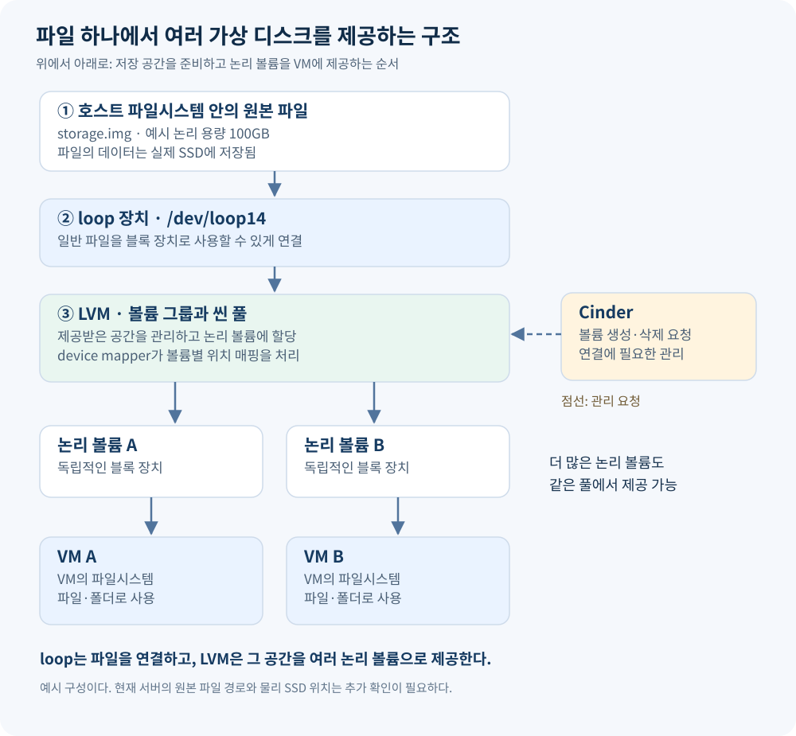
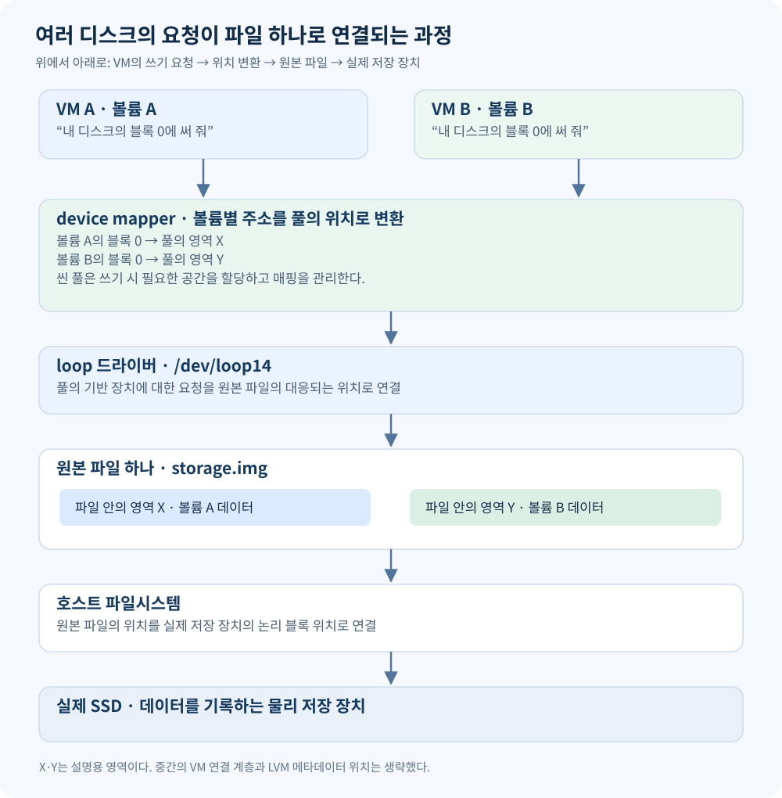

리눅스가 설치된 SSD의 여유 공간으로도 OpenStack VM에 제공할 저장 공간을 만들 수 있다. 파일을 준비하고, loop로 블록 장치처럼 사용할 수 있게 연결한 다음, LVM으로 여러 논리 디스크를 만드는 방식이다.
이 구성을 이해하려면 먼저 파일시스템과 블록 장치를 구분하고, loop와 LVM이 각각 어떤 역할을 하는지 살펴봐야 한다.
1. 파일시스템은 파일 경로를 저장 위치로 연결한다
사용자와 일반적인 프로그램은 /home/user/photos/cat.jpg 같은 파일 경로로 데이터에 접근한다.
하지만 SSD나 HDD가 그 경로를 해석해서 파일을 찾는 것은 아니다. 장치에 전달되는 일반적인 읽기 요청은 다음과 같은 형태다.
“이 논리 블록 위치부터 지정한 양의 데이터를 읽어 줘.”
파일 이름과 폴더 구조를 관리하고, 파일 내용이 저장된 위치를 찾아 주는 것이 파일시스템이다. Linux의 ext4가 대표적인 예다.
| 계층 | 다루는 정보 |
|---|---|
| 사용자·프로그램 | 파일 이름과 경로 |
| 파일시스템 | 폴더 구조, 파일 정보, 데이터 위치 |
| 블록 장치 | 읽거나 쓸 위치와 데이터 크기 |
파일 이름과 폴더 정보도 저장 장치에 기록된다. 다만 장치에는 그것 역시 바이트 데이터이며, 그 의미를 해석하는 주체가 파일시스템이다.
블록 장치는 위치를 지정해서 데이터를 읽고 쓸 수 있도록 제공되는 장치 종류다. 실제 SSD뿐 아니라 소프트웨어로 만든 장치도 같은 인터페이스를 제공하면 블록 장치로 사용할 수 있다.
2. loop는 파일을 블록 장치로 사용할 수 있게 연결한다
기존 파일시스템의 여유 공간을 활용하려면 그 안에 저장 공간 역할을 할 파일을 만들 수 있다. 예를 들어 충분한 크기의 storage.img 파일을 준비한다.
그러나 파일을 만들거나 확장자를 .img로 붙였다고 디스크가 되는 것은 아니다.
loop는 이미 만들어진 일반 파일을 블록 장치로 사용할 수 있게 연결하는 Linux 기능이다. 파일 생성과 공간 확보는 별도로 수행한다.
losetup으로 storage.img를 /dev/loop14에 연결하면 커널에 다음 관계를 설정한다.
“
/dev/loop14로 들어오는 블록 읽기·쓰기 요청을storage.img파일에 처리해 줘.”
이 동작은 Linux 커널의 loop 드라이버가 담당한다.
| 접근 경로 | 사용하는 방식 |
|---|---|
storage.img |
일반 파일로 접근 |
/dev/loop14 |
블록 장치로 접근 |
파일 자체가 다른 종류로 바뀌거나 복사되는 것은 아니다. 같은 파일을 저장 공간으로 사용하는 블록 장치가 생기는 것이다.
loop 장치에 데이터를 쓰면 원본 파일에 기록되고, 최종적으로는 호스트 파일시스템을 거쳐 실제 SSD에 저장된다.
3. LVM은 블록 장치의 공간을 논리적으로 나눠 제공한다
loop를 이용하면 파일 하나를 디스크처럼 사용할 수 있다. 하지만 이 공간을 여러 VM에 각각 별도의 디스크로 제공하려면, 공간을 나눠 관리하는 기능이 필요하다.
이 역할을 하는 것이 LVM(Logical Volume Manager, 논리 볼륨 관리자)이다.
LVM은 블록 장치의 공간을 논리적으로 나눠 여러 디스크처럼 사용할 수 있게 해 준다. 하나의 장치를 나누는 것뿐 아니라 여러 장치의 공간을 모아서 나눌 수도 있다.
예를 들어 100GB 장치를 LVM에 제공하고, 그 공간에서 VM A용 20GB와 VM B용 30GB 논리 디스크를 만들 수 있다. 나머지 공간은 나중에 할당하도록 남겨 둘 수 있다.
LVM은 일반 Linux에서도 사용하는 저장 공간 관리 소프트웨어다. OpenStack 전용 기능이 아니며, Cinder가 LVM을 이용해 볼륨을 관리하는 것이다.
4. loop와 LVM은 서로 다른 일을 한다
두 기능의 차이는 다음과 같다.
loop는 파일을 블록 장치로 사용할 수 있게 연결한다.
LVM은 블록 장치의 공간을 모으고, 논리적으로 나눠 여러 블록 장치로 제공한다.
| 구분 | loop | LVM |
|---|---|---|
| 입력 | 일반 파일 | SSD·파티션·loop 같은 블록 장치 |
| 역할 | 파일을 디스크 인터페이스로 제공 | 저장 공간을 모으고 나눠 관리 |
| 결과 | loop 블록 장치 | 논리 볼륨 블록 장치 |
| 서로 필요한가? | LVM 없이 사용 가능 | loop 없이 사용 가능 |
LVM이 파일을 만든 뒤 loop로 감싸는 것은 아니다. LVM이 만든 논리 볼륨은 이미 블록 장치이므로 다시 loop로 연결할 필요가 없다.
현재처럼 두 기능을 함께 사용하는 경우에는 순서가 다음과 같다.
일반 파일을 준비한다 → loop로 블록 장치로 연결한다 → LVM이 그 장치의 공간을 나눠 제공한다.
5. LVM은 PV·VG·LV로 저장 공간을 관리한다
LVM의 구성은 재료가 되는 장치 → 공간을 관리하는 풀 → 사용할 논리 디스크 순서로 이해하면 된다.
| 용어 | 의미 |
|---|---|
| PV — 물리 볼륨 | LVM이 사용하도록 준비한 블록 장치나 파티션 |
| VG — 볼륨 그룹 | 하나 이상의 PV가 제공하는 공간을 모아 관리하는 풀 |
| LV — 논리 볼륨 | VG 안에서 생성하는 개별 논리 블록 장치 |
PV: LVM에 제공하는 기반 장치
SSD, 파티션, loop 장치 등을 LVM이 사용할 수 있도록 준비하면 PV가 된다.
이름에 ‘물리’가 들어가지만 반드시 실제 SSD 한 개와 일치하는 것은 아니다. 현재 구성에서는 loop14 같은 가상 블록 장치도 PV로 사용할 수 있다.
VG: 기반 장치의 공간을 관리하는 풀
PV들을 VG에 넣으면 LVM은 그 공간을 하나의 풀로 관리한다.
VG의 용량은 이미 존재하는 PV들이 제공한다. VG를 만들 때 별도의 디스크나 저장 공간이 새로 생기는 것은 아니다.
VG는 어떤 PV들이 속해 있는지, 어느 공간이 할당돼 있는지 등을 관리하는 메타데이터로 정의된다. 이 메타데이터는 디스크에 저장된다.
LV: 풀에서 만들어 사용하는 논리 디스크
VG 안에서 LV를 만들면, LVM은 풀의 공간을 해당 LV에 연결한다.
LV를 생성하고 활성화하면 Ubuntu에서 별도의 블록 장치로 보인다. 파일시스템을 만들거나 마운트할 수 있고, VM에 디스크로 제공할 수도 있다.
6. VG를 만들 때와 LV를 만들 때 Ubuntu에서 보이는 것은 다르다
핵심 차이는 다음과 같다.
VG만 만들면 추가 디스크는 나타나지 않는다.
LV를 만들고 활성화해야 추가 블록 장치가 나타난다.
100GB 장치 하나를 사용하는 단순한 예로 보면 다음과 같다. 관리 정보에 사용하는 용량은 생략했다.
| 작업 | LVM의 상태 | Ubuntu에서 보이는 장치 |
|---|---|---|
| 100GB 장치 준비 | 아직 LVM에 등록하지 않음 | 기존 장치 |
| PV 등록 후 VG 생성 | 100GB를 저장 공간 풀로 관리 | 기존 장치는 그대로이며, VG를 대표하는 새 장치는 없음 |
| 20GB LV 생성·활성화 | 풀에서 LV에 공간을 할당 | 기존 장치에 더해 20GB 논리 블록 장치가 나타남 |
VG 생성 후 lsblk에 SSD나 loop 장치가 보이는 것은 기존 기반 장치가 계속 보이는 것이다. VG 때문에 새 디스크가 생긴 것이 아니다.
vgs는 VG와 그 용량을 보여 준다.lvs는 생성한 LV 정보를 보여 준다.lsblk는 기반 장치와 활성화된 LV 등의 블록 장치 관계를 보여 준다.
VG 자체는 포맷하거나 마운트하지 않는다. 파일시스템을 만들고 사용할 대상은 VG 안에서 생성한 LV다.
7. 전체 구성: 파일 하나에서 여러 LV를 제공한다
이제 각 구성 요소를 연결하면 다음 구조가 된다.

호스트 파일시스템에 만든 파일을 loop 장치로 연결하고, 그 장치를 LVM에 등록한다. VG 안에서 만든 LV들은 각각 별도의 블록 장치로 제공된다.
Cinder는 사용할 VG를 설정으로 지정받는다. 사용자가 OpenStack에서 볼륨을 요청하면 Cinder가 LVM을 통해 LV를 만들고, OpenStack의 연결 절차를 통해 VM에 제공한다.
“Cinder에게 VG를 준다”는 것은 장치를 옮기는 것이 아니라, 사용할 VG를 설정에 지정한다는 의미다.
8. 여러 LV의 요청은 어떻게 파일 하나로 연결되는가?
각 LV는 자기만의 주소 공간을 가진다. VM A와 VM B가 각각 자기 디스크의 ‘블록 0’에 쓰더라도 같은 기반 위치를 덮어쓰지는 않는다.
중간에서 볼륨별 주소를 서로 다른 저장 위치로 변환하기 때문이다.

그림의 X와 Y는 설명을 위한 서로 다른 저장 영역이다.
| 요청 | 원본 파일에서 연결되는 곳 |
|---|---|
| 볼륨 A의 블록 0에 쓰기 | 영역 X |
| 볼륨 B의 블록 0에 쓰기 | 영역 Y |
새로운 물리 블록이 생기는 것이 아니라, 각 LV의 주소를 기반 저장 공간의 위치에 연결하는 것이다.
Linux 커널에서 이 변환을 처리하는 기능이 device mapper다. LVM 관리 도구는 저장 공간 구성에 맞춰 매핑을 설정한다.
실제 쓰기 요청은 다음 순서로 이어진다.
- VM이 자기 디스크의 특정 위치에 쓰기를 요청한다.
- 구성된 저장 연결을 통해 해당 LV로 요청이 전달된다.
- device mapper가 LV의 위치를 기반 장치의 위치로 변환한다.
- loop가 기반 장치 위치를 원본 파일의 위치로 연결한다.
- 호스트 파일시스템이 파일의 해당 부분을 실제 저장 위치로 연결한다.
- SSD에 데이터를 기록한다.
따라서 논리 디스크가 100개여도 원본 파일은 하나일 수 있다. 여러 LV의 요청이 서로 다른 매핑을 거쳐 같은 파일 안의 서로 다른 영역에 도달하는 구조다.
9. Cinder의 관리 작업과 실제 읽기·쓰기는 구분된다
Cinder는 볼륨 생성·삭제·연결을 관리한다. 볼륨이 연결된 이후의 읽기·쓰기는 구성된 저장 경로를 따라 처리된다.
매번 Cinder API가 데이터를 받아 파일 위치를 계산하고 전달하는 것은 아니다.
| 구성 요소 | 담당하는 일 |
|---|---|
| Cinder | 볼륨 생성·삭제·연결 관리 |
| LVM 관리 도구 | PV·VG·LV 구성과 매핑 설정 |
| 커널의 device mapper | 실제 블록 요청의 위치 변환 |
| 커널의 loop 드라이버 | 블록 요청을 원본 파일에 연결 |
VM에서는 전달받은 볼륨에 파일시스템을 만들고 마운트해서 사용할 수 있다. 마운트는 파일시스템을 폴더에 연결하는 작업이다.
이 구성에서는 VM 파일시스템이 VM 내부의 파일을 관리하고, 호스트 파일시스템은 기반이 되는 원본 이미지 파일을 관리한다.
10. 씬 풀에서는 데이터를 기록하면서 공간을 할당한다
지금까지의 단순한 용량 예시는 고정 할당을 기준으로 설명했다. 씬 프로비저닝에서는 실제 데이터를 기록하면서 필요한 공간을 할당한다.
LVM에서는 VG 안에 씬 풀을 만들고, 그 풀에서 씬 볼륨을 제공할 수 있다.
- VG: PV들이 제공한 공간을 관리하는 상위 풀
- 씬 풀: VG 안에 생성되는 특수한 LV 구성으로, 씬 볼륨의 데이터와 매핑 정보를 관리
- 씬 볼륨: 씬 풀에서 필요에 따라 공간을 할당받는 개별 LV
따라서 lsblk에 씬 풀 관련 장치가 보인다고 해서 VG 자체가 블록 장치로 나타난 것은 아니다.
또한 원본 파일이 희소 파일이라면 실제 SSD 공간도 데이터 기록에 따라 점차 할당될 수 있다. 이 경우 볼륨의 논리 용량, 씬 풀의 실제 사용량, 원본 파일의 실제 디스크 사용량은 서로 다를 수 있다.
논리 볼륨을 많이 만들어도 물리 용량이나 성능이 늘어나지는 않는다. 같은 원본 파일과 SSD를 사용하는 볼륨은 기반 저장 공간의 용량·성능·장애 영향을 공유한다.
11. 전용 SSD가 있으면 loop를 생략할 수 있다
파일과 loop를 사용하는 이유는 기존 파일시스템의 여유 공간을 활용하기 위해서다.
이미 파일시스템이 사용하는 영역을 그대로 LVM용으로 초기화하면 관리 정보와 데이터를 덮어쓸 수 있다. 문제는 그 장치가 블록 장치가 아니라서가 아니라, 같은 영역을 파일시스템과 LVM이 각각 자기 방식으로 사용하려 하기 때문이다.
파일 기반 구성에서는 호스트 파일시스템이 원본 파일을 관리하고, LVM은 loop로 제공받은 파일 내부를 관리하므로 범위가 구분된다.
별도의 SSD나 전용 파티션을 준비할 수 있다면 이를 LVM에 직접 제공할 수 있다.
| 구성 | 저장 공간 제공 경로 |
|---|---|
| 기존 파일시스템의 여유 공간 활용 | 파일 → loop → LVM |
| 전용 SSD 또는 파티션 활용 | 장치 또는 파티션 → LVM |
전용 장치를 사용하면 파일과 loop 단계는 없어지지만, LV의 위치를 기반 장치의 위치로 변환하는 device mapper의 역할은 유지된다.
12. 현재 서버에서 확인된 범위
제공된 장치 목록에서는 다음 상태가 확인됐다.
| 항목 | 관찰된 상태 |
|---|---|
loop14 |
용량 100G, LVM2_member 표시 |
cinder-volumes |
Cinder용 LVM 볼륨 그룹 |
| LVM 씬 풀 | 약 95G |
| 개별 논리 볼륨 | 1G, ext4 파일시스템 표시 |
이 출력으로 loop 장치를 LVM에 제공하고, 씬 풀 안에서 Cinder용 LV를 관리하는 구조는 확인할 수 있다.
loop14는 원본 파일을 연결한 기존 블록 장치다. cinder-volumes는 LVM의 관리 메타데이터로 정의되는 VG이며, 그 안에서 생성·활성화된 LV들이 추가 블록 장치로 나타난다.
같은 loop 기반 풀의 LV에 대한 요청은 매핑을 거쳐 원본 파일로 연결된다. 다만 원본 파일이 어느 SSD에 있는지, 해당 볼륨이 어느 VM에 연결되거나 마운트됐는지는 아직 확인하지 않았다. 이를 확정하려면 원본 파일 경로와 호스트 파일시스템, OpenStack의 볼륨 연결 상태를 추가로 확인해야 한다.